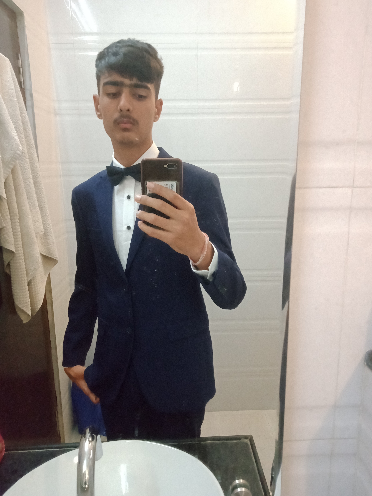
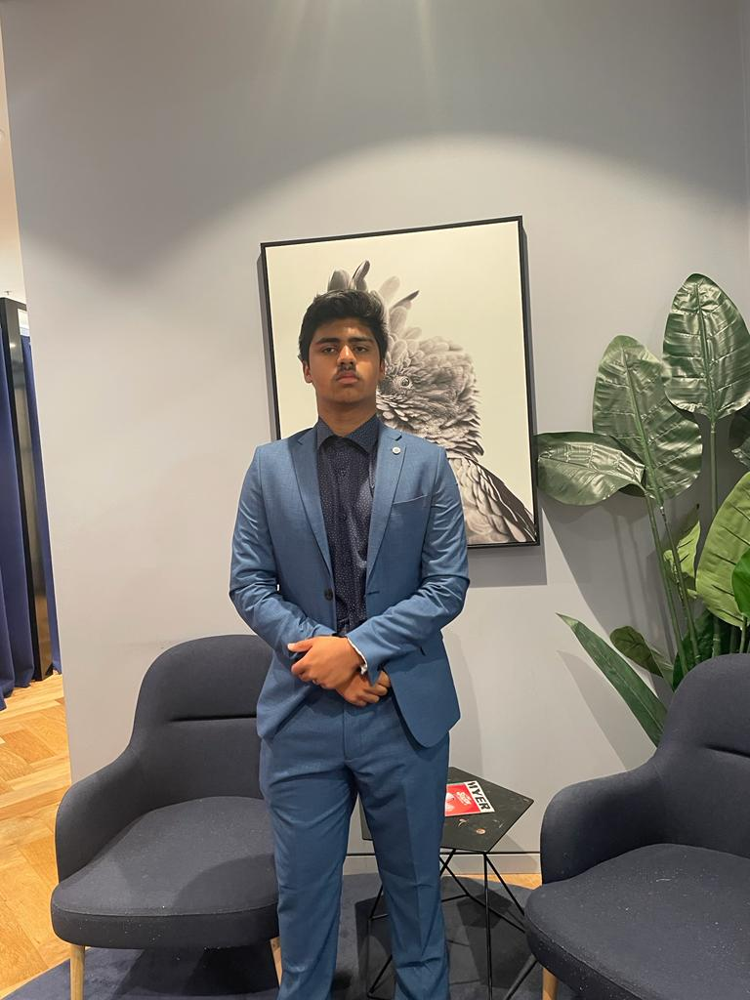

Credits
HOME
ICONS
TROPHIES
SQUAD LINEUP
MERCHANDISE
Special Thanks To:
Devansh and Noah
 
Sources
Images
Barcelona Crest
Camp Nou
Messi vs Ronaldo
History of Barcelona
Messi
Joan Laporta
Johan Cruyff
Xavi Hernandez
Champions League Trophy
Club World Cup Trophy
UEFA Cup Trophy
Super Cup Trophy
Copa Del Rey Trophy
Spanish Super Cup Trophy
Inter-Cities Fair Cup Trophy
La Liga Trophy
Player Portraits
Merchandise Imagery
Barcelona Jersey
Information
Bersweiler Vidéo:
The History of Barcelona Documentary
Wikipedia:
Barcelona Background Information
Transfermarkt:
Barcelona Trophies/Achievments
FC Barcelona:
Barcelona Official Page
Britannica:
Barcelona History and Data
FootballHistory:
Barcelona History
TheCultureTrip:
Barcelona Interesting Facts
Kiddle:
Barcelona Statistics